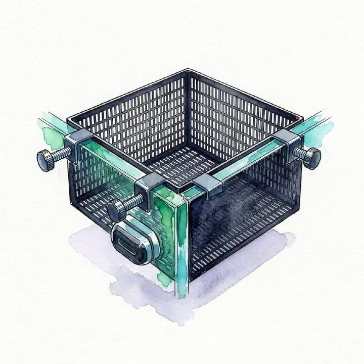

من مجموعة أكوا هافنAQUA HAVEN / THE COLLECTION
صندوق عزل وتفريخ للأسماك – 15×15×10 سم
صندوق عزل وتفريخ يثبت على زجاج الحوض، مناسب للزريعة والأسماك الصغيرة والعزل المؤقت، بفتحات 2 مم تسمح بتدوير المياه. يناسب زجاجًا بسماكة حتى 15 مم.
٤٥ ر.س
متاح ضمن اللقطة المرجعية
مساحة للاكتشاف، قبل الاختيار.
واصل استكشاف المجموعة هذه معاينة للتصميم. الأسعار والخيارات والتوفر مرجعية وغير متزامنة؛ لا يمكن الطلب أو الدفع من هذه الصفحة.
A CLOSER LOOK
نظرة أقرب.
نبذة عن المنتج
صندوق عزل وتفريخ متعدد الاستخدامات يُثبت على زجاج الحوض، ويوفر مساحة منفصلة داخل نفس الحوض للزريعة والأسماك الصغيرة أو للعزل المؤقت، مع استمرار تبادل المياه عبر الفتحات الدقيقة.
المواصفات
- الأبعاد: 15 × 15 × 10 سم
- يناسب زجاج أحواض بسماكة حتى 15 مم
- فتحات شبكية دقيقة: 2 مم
- تثبيت بالمشابك مع قفل إضافي لثبات أفضل
- حواف ناعمة وتصميم مفتوح للمراقبة ودوران المياه
الاستخدامات
- عزل مؤقت للأسماك داخل الحوض
- التفريخ وحماية البيض والزريعة
- حماية صغار الأسماك من الأسماك الأكبر
- تثبيت وتجذير بعض النباتات المائية مثل الموس والأنوبياس
المميزات
- تركيب بدون أدوات على زجاج الحوض.
- الفتحات الدقيقة تساعد على منع خروج الأسماك الصغيرة والروبيان مع السماح بتبادل المياه.
- تصميم ثابت وسهل الفك والتركيب عند الحاجة.
- مناسب للاستخدام المؤقت والمتابعة المباشرة داخل الحوض الرئيسي.
تنويه مهم
لأن الصندوق يتبادل المياه مع الحوض الرئيسي، فهو مناسب للعزل الجسدي المؤقت والتفريخ وحماية الزريعة، لكنه ليس بديلًا عن حوض حجر صحي مستقل عند التعامل مع الأمراض المعدية أو العلاج الدوائي.
محتويات العبوة
صندوق عزل وتفريخ مع قطع التثبيت على زجاج الحوض.